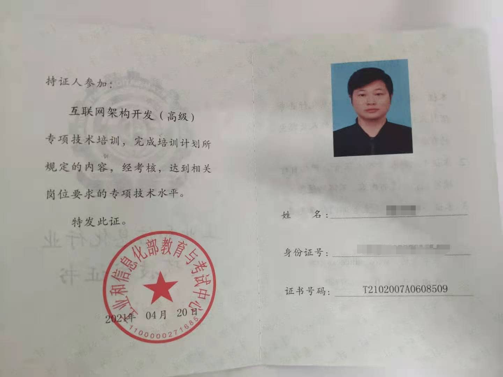
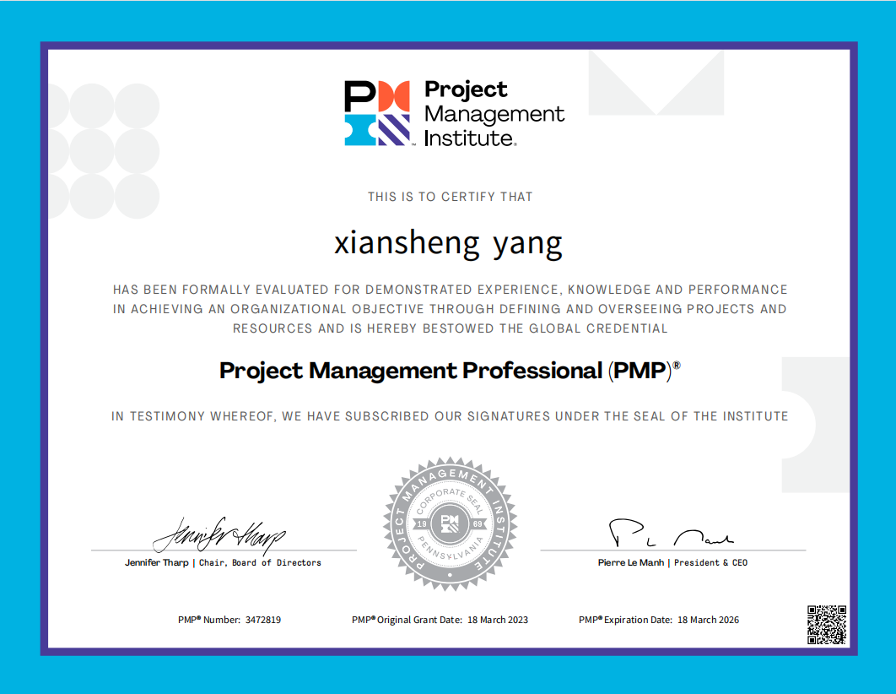

thomas
前端开发工程师
- 男 / 1992.06.15
- 本科
经历
法本(深圳)信息技术有限公司
2022.09 至 2024.01工作- 外派支援中兴采购域项目的迭代，并和中兴那么一起对项目权限和路由的升级改造，并配合PM对任务进行拆解分配，并跟进同组成员进度和问题解决
- 接手本部新任务《诚信》项目的开发，对接山东诚信监理公司需求，细化落实项目进度
- 独自开发金鸡湖服务系统子服务系统
- 独自开发智能制造管理系统
合创廸安(深圳)科技有限公司
2021.08 至 2022.08工作- 主要做项目协作管理的整合和管理的数据可视化，开始主打房地产行业，平台容括了管理思想和工具集成，做了甘特图管理进度，资源日历管理人力资源，会议平台集成，流程和项目流转可视化，组织架构图集成等工具和功能，后随市场做了方向调整到制造业
- 和河南大学联合办公，做时空大数据方面的定制化要求
- 除了平台任务的开发，还会维护自己公司的管理后台和小程序
深圳华云信息系统有限公司
2020.04 至 2021.08工作在外派到招商证券机构服务平台项目组：
- 满足项目的需求和变更，支撑业务快速迭代
- 封装基础组件和优化页面性能与结构
安徽英泽科技有限公司(武汉)
2017.07 至 2020.03工作公司自营项目和接的外包项目的前端开发，主要包括：
- 旧项目的改版和优化
- 满足项目的需求和变更
- 移动端和pc端前端项目构建与编码规范
- 推进ReactNative技术在公司的推广使用
- 和团队一起开发基础UI组件库，支撑业务快速迭代、统一视觉规范
项目
以下是我的参与的部分代表项目所用的技术栈金鸡湖 聆悉协作 招商证券机构服务平台 汽车销售 | 转转乐 多人在线聊天室 猫跳跳视频app
- 项目说明：做一个系统的一个数据录入功能，帮助政企客户先把企业客户的申报信息收集。只是一个新系统的一部分，二期目前还没有开展。 主要我们采用模板生产的方式，快速构建项目。
- 技术栈：ruoyi + html2canvas + jspdf...
- 项目说明：一个提供管理协作的sass平台，旨在为客户提供高效管理，协同合作和文件管理，支持多组织的综合管理，并提供了圈子和会议预约等功能。
- 技术栈：dva+antd+hooks+typeScript+Konva+jspdf+fabric...
- 项目说明：招商证券的机构服务平台项目，主要是给一些管理人提供金融服务、外包托管、资产管理等功能的平台，用的还是react，主要还是第一次在项目中使用ts和hooks，给人映像深刻
- 技术栈：react+redux+antd+hooks+reactRouter+typeScript+Echart...
- 项目说明：汽车销售就是给用户介绍一些汽车性能介绍，销售情况，分析客户需求，给予一定的推荐方案等
- 转转乐就是通过用户阅读文章，分享文章，然后赚金币，金币可以兑换人民币，它的技术栈和汽车销售项目差不多，主要是它是我独立开发的一个项目
- 技术栈：next.js+react+styleComponent+redux+chart.js...
- 项目说明：这个项目就有点像bbs论坛一样，就是在首页发布的一些话题入口中，点击进入后，只要在这入口的就可以进行文字和表情聊天，上面部分可以看视频，也可以切换，是一个定制化项目，也是我用vue做项目的一个代表项目。
- 技术栈：vue+rongcloudSDK+axios+vueX+vueRouter+webpack+sass...
- 项目说明：这个项目做的功能比较简单，做一个视频列表，加入一些常见的互动和分享；我们当时开发的第一个版本功能较为简单，后续招到了专门搞RN的接手了。这个项目让那时的我见识到技术的有趣性。
- 技术栈和工具：reactNative+reactRedux+axios+reactNavigation+reactNativeKsyvideo+(react-native-yz-vlcplayer)+android-studio...
技能
- 熟知JavaScript/ES6/TypeScript
- 掌握H5和css3的一些新特性
- 掌握一些浏览器的兼容处理
- 用React开发大型复杂应用，包括使用umi和dva
- 掌握React调试、性能优化
- 熟练使用服务端渲染next.js构建项目
- 了解ReactNative跨平台开发
- 熟练使用vue开发spa项目，或用vue-cli搭建项目开发
- 熟练掌握vue项目开发过程的优化
- 熟练封装组件构建功能模块
- vue3虽然没有项目经验，但是也在github上找了一些项目进行学习和模仿
- 熟练使用一些常用的Webpack Plugin & Loader
- 用vtie开发了公司内部项目
- 参与设计和优化了团队多个项目
- 有用过react版的taro开发一小程序--‘聆悉协作’
- 有用uniapp独自开发一个h5和小程序版项目
- 掌握一些Nodejs标准库及模型
- 常用Nodejs服务与其它构建工具
- 目前是属于一种了解数据结构和算法的过程，对栈，队列，链表等数据结构有一些清晰的认识
- 算法这方面会经常去力扣上去学习和解题，但掌握的不多
- 熟练使用echart等做大数据大屏展示
- 可以使用Konva等canvas库做实现一些大数据渲染的功能,如甘特图等
- 已取得pmp项目管理证书
- 目前有在学习一些管理知识，如瀑布管理和敏捷管理等
自我评价
- 热爱编程，长期关注各大技术网站学习，从一个切图仔到现在能熟练运用框架开发，发现自己也在不断成长，这是一种幸运，幸运自己在坚持，程序员的路没有终点，仍需不断学习。朽木自雕，低石自磨，如切如磋，如琢如磨；
拓展
- 博客园：https://www.cnblogs.com/thomas-yang-github/
- 开源项目：https://github.com/yangxiansheng1992/weichat
- 工业信息化证书：
- pmp证书：